Casino non AAMS: i migliori siti stranieri del 2026
I 10 migliori casino non AAMS del 2026, selezionati dopo settimane di test reali
🕐 Aggiornato:
Hai sentito parlare dei casino non AAMS e vuoi capire davvero di cosa si tratta? Semplice: sono siti di gioco online con licenza straniera — Malta, Estonia, Curaçao — che non fanno parte del sistema italiano. Niente autoesclusione ADM, niente limiti di deposito obbligatori, niente SPID al momento della registrazione.
Sempre più italiani li scelgono. E non solo per aggirare qualcosa: spesso i bonus sono tre volte migliori, il catalogo di giochi è enormemente più vasto, e puoi prelevare in crypto in meno di dieci minuti.
Su FlowerHome.it li testiamo uno per uno, con depositi e prelievi reali. Non inseriamo un casino in lista finché non siamo sicuri che paghi davvero, che la licenza sia verificabile e che il supporto risponda quando serve.
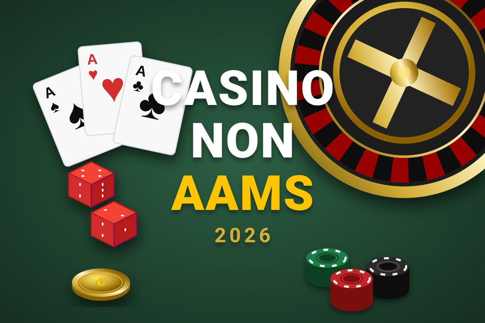
Come scegliamo i casino che consigliamo
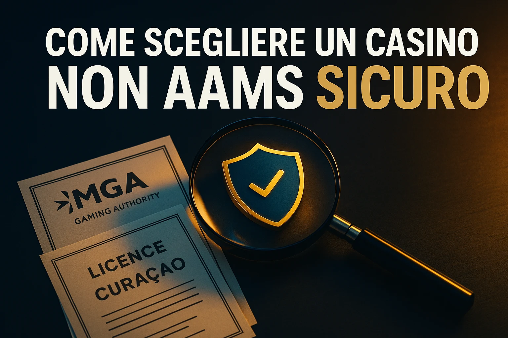
Non ci fidiamo di quello che dice il sito. Ci fidiamo di quello che succede quando depositi, giochi e cerchi di prelevare. Ogni casino passa attraverso settimane di test reali prima di entrare in lista.
Non il logo — il numero. Lo controlliamo direttamente sui registri ufficiali di MGA, EMTA e Curaçao GCB. Una licenza scaduta o non verificabile esclude subito il casino dalla lista.
Testiamo con soldi veri e metodi diversi. Misuriamo i tempi effettivi. Un prelievo che impiega cinque giorni invece di uno è un segnale d'allarme che non ignoriamo mai.
Leggiamo ogni riga dei T&C. Un bonus da 1.000€ con wagering 60x e scadenza tre giorni è una trappola. Preferiamo bonus da 200€ con wagering 20x che puoi davvero completare.
Qualità prima della quantità. Preferiamo 2.000 slot di provider affermati a 8.000 titoli di studi sconosciuti. Verifichiamo Evolution, Pragmatic Play, Nolimit City, NetEnt.
Conttattiamo l'assistenza di notte, nei weekend, durante le ore di punta. La live chat deve rispondere in meno di tre minuti. Testiamo anche la competenza, non solo la velocità.
Forum italiani, gruppi Telegram, Trustpilot. Un caso isolato non ci preoccupa. Un pattern ripetuto di pagamenti negati o conti chiusi senza motivo è una bandiera rossa definitiva.
Recensioni dettagliate: i 5 migliori casino non AAMS
Questi cinque operatori hanno superato tutti i nostri test. Qui trovi quello che conta davvero: licenza verificata, prelievi reali e bonus con condizioni leggibili.
1. Bizzo Casino
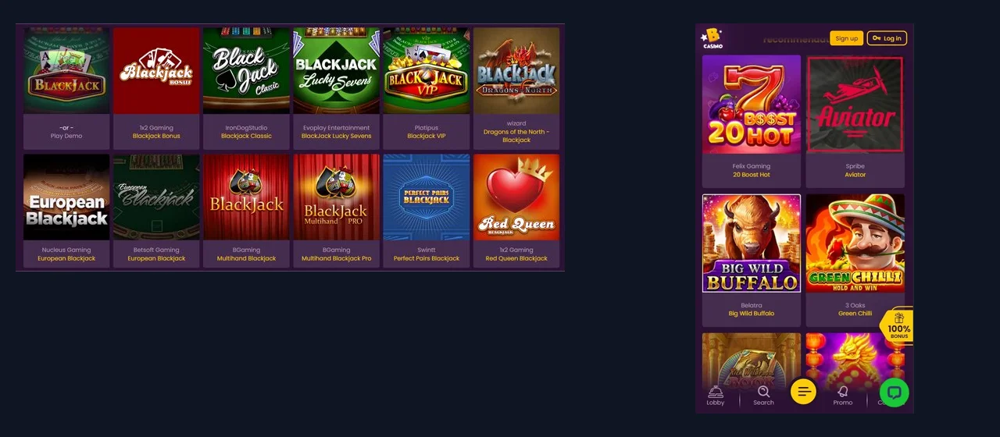
Bizzo è uno dei casino non AAMS più noti tra i giocatori italiani. Licenza Curaçao, oltre 3.500 giochi, prelievi rapidi e un catalogo che include tutti i provider che contano. L'interfaccia è snella e funziona bene sia su desktop che su mobile.
- Bonus: 100% fino a 500€ + 100 free spin sul primo deposito. Wagering 40x.
- Pagamenti: Visa, Mastercard, Skrill, Neteller, crypto (BTC, ETH, LTC). Prelievi in 24h.
- Catalogo: 3.500+ titoli — Nolimit City, Hacksaw Gaming, Play'n GO, Evolution per il live.
- Licenza: Curaçao GCB — verificabile sul registro ufficiale gcb.cw.
- Mobile: web app ottimizzata, nessuna installazione richiesta.
Pro: catalogo enorme, supporto live chat 24/7, prelievi crypto veloci.
Contro: il wagering del bonus benvenuto è 40x — nella media alta del settore.
Verdetto: il casino non AAMS più completo della lista. Ideale per chi vuole varietà e affidabilità.
2. Wazamba
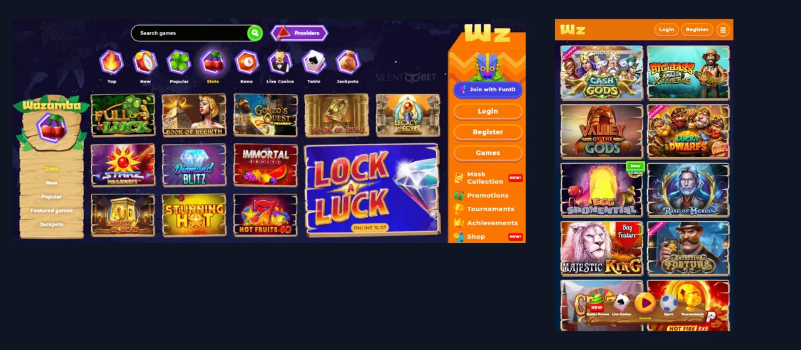
Wazamba è uno dei casino stranieri più popolari tra i giocatori italiani. Oltre 5.000 giochi, un programma VIP con premi reali e un tema tribale che lo distingue visivamente da tutto il resto. Licenza Curaçao, prelievi in 24h e supporto live chat attivo.
- Bonus: 100% fino a 500€ + 200 free spin sul primo deposito.
- Pagamenti: Visa, Mastercard, Skrill, Neteller, crypto, Paysafecard. Prelievi in 24h.
- Catalogo: 5.000+ titoli — Pragmatic Play, Play'n GO, Nolimit City, Evolution per il live.
- Licenza: Curaçao — operativo dal 2019, nessun problema significativo registrato.
- Mobile: interfaccia ottimizzata per browser mobile, fluida e veloce.
Pro: catalogo enorme, programma VIP con benefici concreti, 200 free spin inclusi nel benvenuto.
Contro: il wagering sui free spin è 40x — verifica sempre le condizioni prima di attivare.
Verdetto: ottima scelta per chi vuole varietà di giochi e un VIP program che funziona davvero.
3. Richmoose
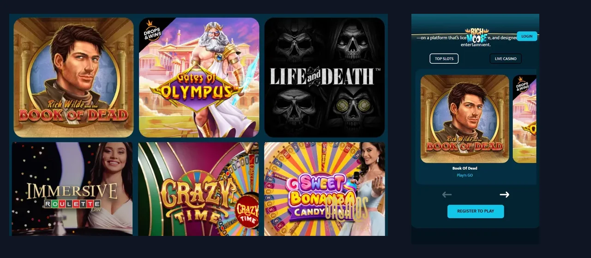
Richmoose è gestito da Elmst Limited con licenza MGA Malta — una delle più solide del settore. Offre oltre 4.000 giochi, prelievi rapidi e un'interfaccia pulita che funziona bene sia su desktop che mobile.
- Bonus: fino a 700 spin + 1.100€ distribuiti sui primi 5 depositi + 15% cashback settimanale.
- Pagamenti: Visa, Mastercard, Skrill, Neteller, Apple Pay, Revolut, Jetonbank. Prelievi in 24h.
- Catalogo: 4.000+ slot, live casino con Evolution e Pragmatic Play Live.
- Licenza: MGA (Malta) — tra le più affidabili in Europa.
- Mobile: browser mobile ottimizzato, nessuna app richiesta.
Pro: licenza MGA solida, cashback settimanale al 15%, pagamenti moderni (Apple Pay, Revolut).
Contro: il pacchetto benvenuto è distribuito su 5 depositi — chi deposita una volta sola prende solo la prima parte.
Verdetto: affidabilità MGA con cashback reale. Ideale per chi cerca un casino non AAMS serio e continuativo.
4. NV Casino
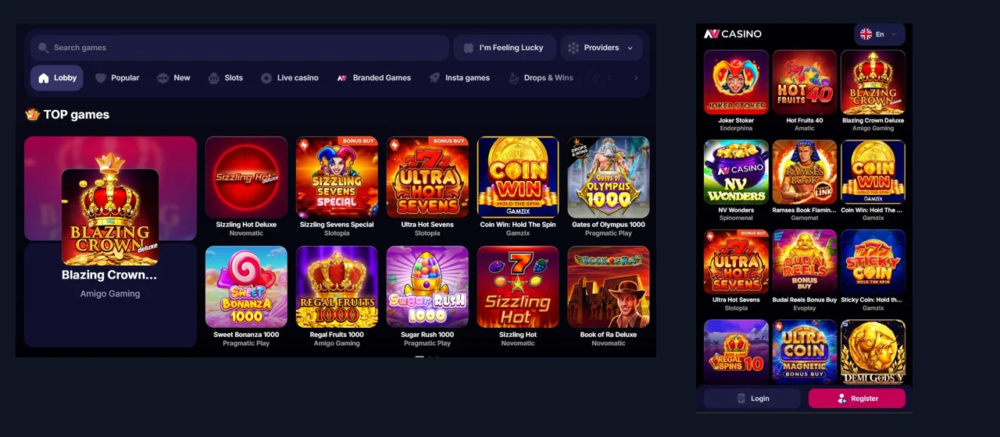
NV Casino è uno dei più recenti ma già ben posizionato. Interfaccia moderna, oltre 5.000 giochi e una sezione live casino molto fornita. Licenza Curaçao, prelievi in 24–48h, supporto attivo.
- Bonus: 100% fino a 300€ + 50 free spin al primo deposito.
- Pagamenti: Visa, Mastercard, Skrill, Neteller, crypto. Prelievi in 24–48h.
- Catalogo: 5.000+ titoli — Endorphina, Amatic, Gamix, Gamomat, Evoplay tra i provider.
- Licenza: Curaçao GCB.
- Mobile: web app ottimizzata, caricamento rapido anche su 4G.
Pro: catalogo enorme con provider meno comuni, ottima sezione slot classiche e bonus buy.
Contro: piattaforma relativamente nuova — meno storico di recensioni rispetto ai veterani della lista.
Verdetto: da tenere d'occhio se ami le slot classiche e i provider alternativi non disponibili in Italia.
5. Spinlander
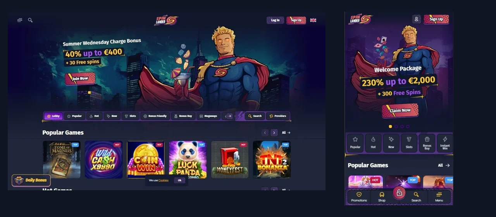
Spinlander punta tutto sulle slot. Con oltre 7.000 titoli è il casino con il catalogo più grande della lista, e il rakeback continuativo lo rende particolarmente conveniente per chi gioca con regolarità.
- Bonus: 230% fino a 2.000€ + 300 free spin sul primo deposito.
- Pagamenti: Visa, Mastercard, Neteller, Skrill, BTC, ETH. Prelievi in 12–24h.
- Catalogo: 7.000+ slot — Nolimit City, Hacksaw Gaming, BTG, Push Gaming, Play'n GO.
- Licenza: Anjouan — verificabile sul registro ufficiale.
- Mobile: web app fluida, nessuna installazione richiesta.
Pro: catalogo slot imbattibile, bonus benvenuto tra i più alti della lista, rakeback continuativo.
Contro: alcuni ritardi segnalati sui prelievi da giocatori con vincite elevate — tienilo a mente.
Verdetto: il paradiso degli appassionati di slot. Il più grande catalogo della lista con un bonus da urlo.
Perché i casino stranieri attraggono sempre più italiani
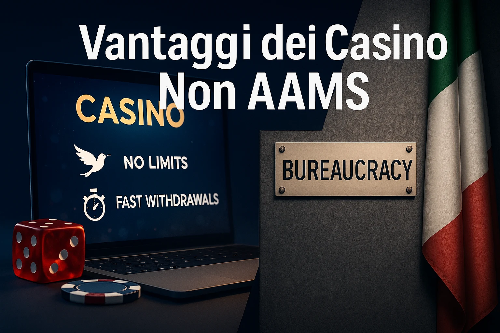
Dal 2019 in poi il mercato italiano si è fatto sempre più stretto: il Decreto Dignità ha vietato la pubblicità, tagliato i bonus e reso obbligatorio lo SPID. Nel frattempo i casino stranieri hanno continuato a migliorare. Il risultato è una differenza enorme nell'esperienza di gioco.
- Bonus grandi e realmente utilizzabili: cashback senza wagering, rakeback, VIP con vantaggi tangibili
- Nessun collegamento all'autoesclusione ADM — puoi accedere anche se sei iscritto al registro nazionale
- Crypto, Revolut, N26, Apple Pay — metodi che le banche italiane bloccano sui siti ADM
- Catalogo di giochi enormemente più ampio: crash games, Megaways, slot esclusive non disponibili in Italia
- Nessun limite di deposito obbligatorio imposto per legge
- Registrazione in meno di due minuti, senza SPID né codice fiscale immediato
- In caso di disputa, l'ADM non può intervenire: devi rivolgerti all'ente estero
- Alcune banche italiane (Intesa, UniCredit) bloccano i pagamenti verso casino stranieri
- Le vincite da casino extra-UE (Curaçao, Anjouan) potrebbero essere soggette a tassazione del 30%
- Nessuna autoesclusione centralizzata: devi gestire il blocco sito per sito
Come iniziare: dalla registrazione al primo gioco
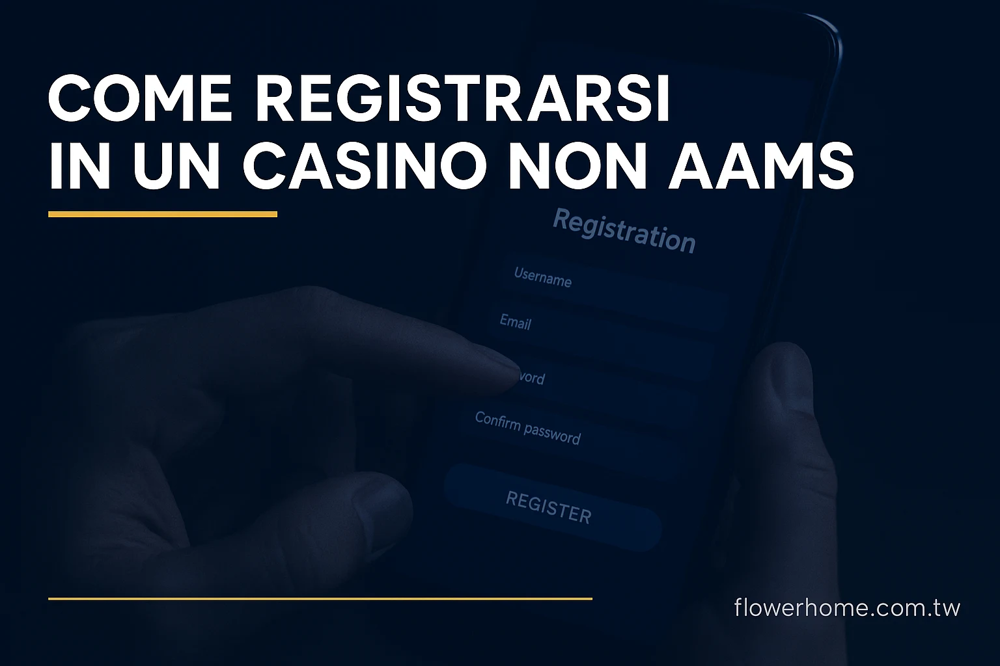
Il processo è più semplice di quanto pensi. La maggior parte dei casino stranieri richiede meno di due minuti per aprire un conto e depositare.
Chiediti cosa cerchi. Vuoi il bonus più grande? Guarda Golden Panda o TenBet. Vuoi prelievi crypto rapidi? Spinlander o NV Casino. Sei nuovo e vuoi iniziare senza stress? Richmoose o Djack. Ami i tavoli live? Sugarino ha il live casino migliore della lista. Non scegliere a caso: ogni casino ha un punto di forza diverso.
La maggior parte dei casino stranieri chiede solo email e password. Djack e NV Casino permettono il login diretto con Telegram: un messaggio e sei dentro. Niente codice fiscale, niente SPID, niente documenti immediati.
Vai alla sezione Cassa e scegli il metodo di pagamento. Per attivare il bonus deposita almeno l'importo minimo richiesto — solitamente tra 10€ e 20€. Se depositi meno, il bonus non parte. Con crypto e Revolut il saldo si aggiorna in pochi secondi.
La verifica dell'identità è richiesta prima del prelievo. Il consiglio più utile: falla subito, non aspettare il momento del prelievo. Chi la fa in anticipo incassa quasi istantaneamente. Chi aspetta, aspetta giorni.
Se hai un bonus attivo, controlla il progresso del wagering nell'area personale. Non richiedere un prelievo finché non hai finito: farlo con il bonus ancora attivo può costarti tutte le vincite generate fino a quel momento.
I bonus dei casino stranieri: guida pratica
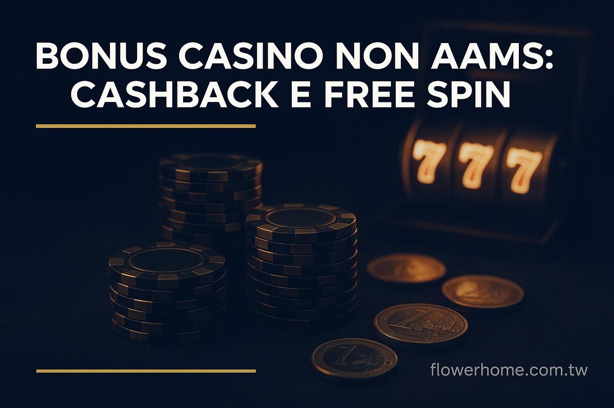
I casino non AAMS possono offrire promozioni che in Italia sono vietate dal 2019. Ma non tutti i bonus sono uguali. Ecco quello che devi sapere per distinguere le offerte buone da quelle che sembrano buone.
Bonus di benvenuto sul deposito
Il più comune. Il casino aggiunge una percentuale al tuo primo versamento: 100% lo raddoppia, 200% lo triplica. Alcuni operatori estendono il pacchetto anche al secondo e terzo deposito.
Il numero che conta davvero non è la percentuale, ma il wagering. È il numero di volte che devi scommettere il bonus prima di prelevare. Con 100€ di bonus e wagering 30x, devi generare 3.000€ di puntate totali. Sotto 30x è accettabile. Sopra 50x, quasi sempre non vale la pena accettarlo.
Il cashback senza wagering
Questa è la promozione che preferiscono i giocatori esperti. Ogni settimana il casino ti rimborsa una percentuale delle perdite nette — solitamente tra il 10% e il 15%. La cosa fondamentale: nei casino migliori arriva senza wagering. Lo ricevi sul conto e puoi prelevarlo subito, senza rigiocare nulla.
Bizzo e Golden Panda offrono entrambi cashback senza wagering. Non è un caso che siano ai vertici della nostra lista. Se giochi con una certa regolarità, questo tipo di promozione è quella che porta più valore nel lungo periodo.
I free spins
Giri gratuiti su slot specifiche, quasi sempre inclusi nel pacchetto di benvenuto. Il valore reale dipende da tre cose: il valore di ogni spin (solitamente 0,10€–0,20€), il wagering sulle vincite generate, e il tetto massimo prelevabile da quelle vincite.
888 free spins suonano bene, ma se il valore è 0,10€ e il massimo prelevabile è 50€, il valore pratico è molto diverso da quello pubblicizzato. Leggi sempre questi dettagli prima di scegliere un casino per i suoi free spins.
Il rakeback
Il casino prende sempre un margine su ogni puntata. Il rakeback restituisce una parte di questo margine al giocatore, vinca o perda. Si accumula nel tempo e per chi gioca volumi alti cambia significativamente il bilancio mensile. Spinlander e PuppyBet sono i più generosi della lista su questo fronte.
Come riconoscere un bonus che vale davvero
- Wagering basso: sotto 30x è accettabile, sotto 15x è ottimo, sopra 50x quasi mai conviene.
- Scadenza ragionevole: almeno 7-14 giorni per completare il requisito. Meno di una settimana su importi grandi è spesso impossibile.
- Giochi validi: le slot che giochi normalmente contribuiscono al 100%? Molti casino limitano blackjack e roulette al 10%.
- Tetto massimo prelevabile: alcuni casino limitano il prelievo a 5x il valore del bonus. Altri non hanno limiti. Grande differenza.
Pagamenti: cosa funziona, cosa no, e come risolvere
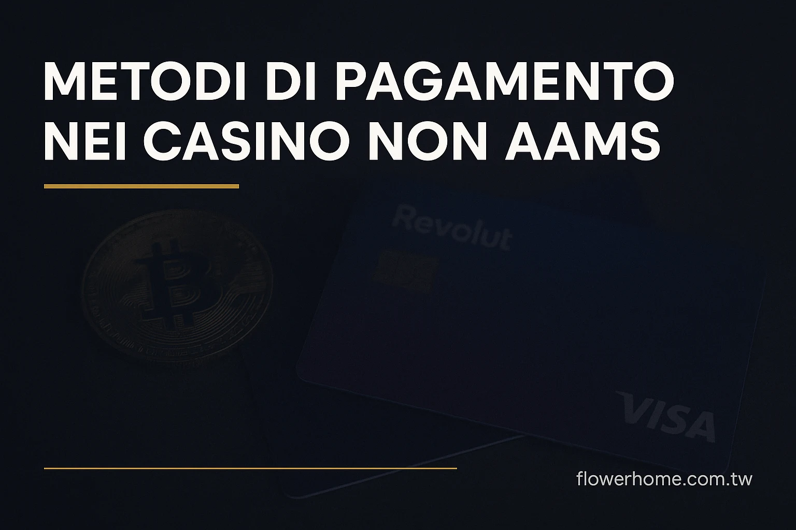
Sui casino stranieri hai più opzioni che su qualsiasi sito ADM. Ma le banche italiane possono complicare le cose. Ecco come orientarti.
Intesa Sanpaolo, UniCredit, BancoBPM e Poste Italiane bloccano spesso le transazioni verso casino stranieri per conformità alle direttive ADM. Non è un problema del casino — è la banca che non lascia passare il pagamento.
La soluzione più rapida: apri un account Revolut (gratuito, pronto in pochi minuti), trasferisci i fondi e usa Revolut per depositare. In alternativa, passa direttamente alle criptovalute.
Consigli pratici per evitare problemi
- Completa il KYC subito dopo il primo deposito, non al momento del prelievo.
- Usa lo stesso metodo per depositi e prelievi quando possibile — è una norma antiriciclaggio standard.
- Non richiedere un prelievo con un bonus ancora attivo: in molti casino significa perdere il bonus e le vincite collegate.
- Controlla le commissioni di rete se usi crypto: variano molto in base al momento e alla blockchain.
Tasse sulle vincite: la situazione reale
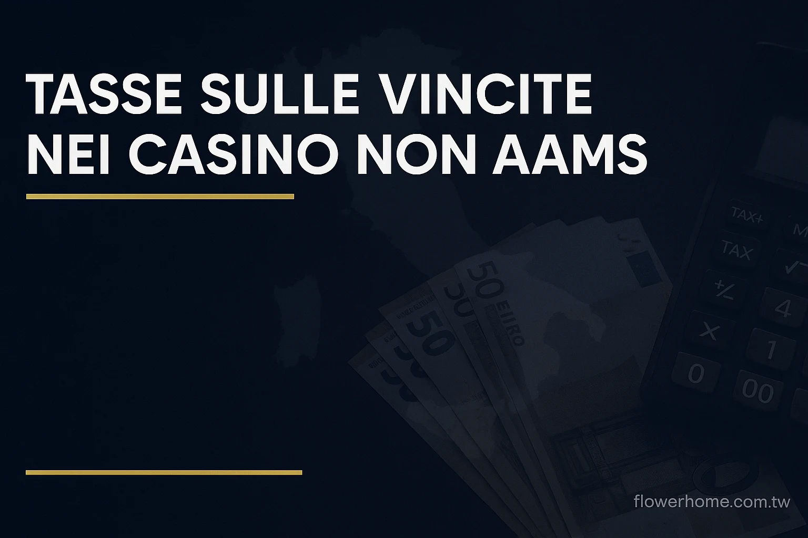
È uno degli argomenti più fraintesi. La risposta dipende da dove ha sede il casino, non dal fatto che sia "non AAMS".
Casino con licenza nell'Unione Europea (MGA o EMTA)
Malta ed Estonia sono paesi UE. Le vincite ottenute su casino con licenza in questi paesi non sono soggette a doppia tassazione per i giocatori italiani, grazie al principio europeo di libera circolazione dei servizi. Il casino ha già pagato le tasse nel suo paese d'origine. Non è una zona grigia: è una posizione confermata più volte dalla Corte di Giustizia dell'UE.
Casino con licenza extra-UE (Curaçao, Anjouan)
Qui la situazione è diversa. Secondo l'Agenzia delle Entrate, le vincite da operatori non europei potrebbero essere soggette a una ritenuta del 30% e andrebbero dichiarate come redditi diversi.
Per vincite contenute questo aspetto viene raramente contestato nella pratica. Per importi significativi, è sempre meglio consultare un commercialista esperto in redditi esteri e tenere un registro delle sessioni di gioco.
I giochi: cosa trovi che in Italia non c'è
I provider senza certificazione ADM non possono distribuire in Italia — e sono tanti, e alcuni sono i migliori sul mercato globale. Questo crea una differenza enorme nel catalogo disponibile.
Slot machine
Dai 3.000 agli 8.000 titoli, con nuovi rilasci ogni settimana. Oltre alle videoslot classiche trovi le Megaways con fino a 117.649 combinazioni per giro, le Cluster Pays dove le vincite si formano a gruppi, e le Bonus Buy che permettono di comprare direttamente la funzione bonus senza aspettarla casualmente.
Provider da cercare: Nolimit City per le meccaniche originali e l'alta volatilità, Hacksaw Gaming per i moltiplicatori altissimi, Push Gaming per la qualità dell'esperienza, Pragmatic Play per la varietà.
Live casino con croupier reale
Tavoli in streaming H24, disponibili per blackjack, roulette in tutte le varianti, baccarat e poker live. I provider che fanno la differenza sono Evolution — che produce Lightning Roulette, Crazy Time, Monopoly Live — e Pragmatic Play Live.
Nei casino stranieri trovi tavoli con limiti che sui siti italiani non esistono: dai tavoli da 0,50€ per chi vuole iniziare, ai tavoli VIP con puntate minime da centinaia di euro.
Crash games
Una categoria che in Italia semplicemente non esiste. Il più famoso è Aviator di Spribe: scommetti, un aereo decolla, il moltiplicatore sale. Decidi tu quando incassare — ma se aspetti troppo il gioco crasha e perdi tutto. Un mix di istinto, gestione del rischio e tempismo completamente diverso da qualsiasi slot tradizionale.
Scommesse sportive
Molti operatori della lista integrano uno sportsbook completo: calcio, basket, tennis, NFL, e-sport, MMA e ippica, spesso con quote più alte rispetto ai bookmaker italiani. Richmoose è il più forte della lista su questo fronte.
-->Casino senza autoesclusione: quello che devi sapere
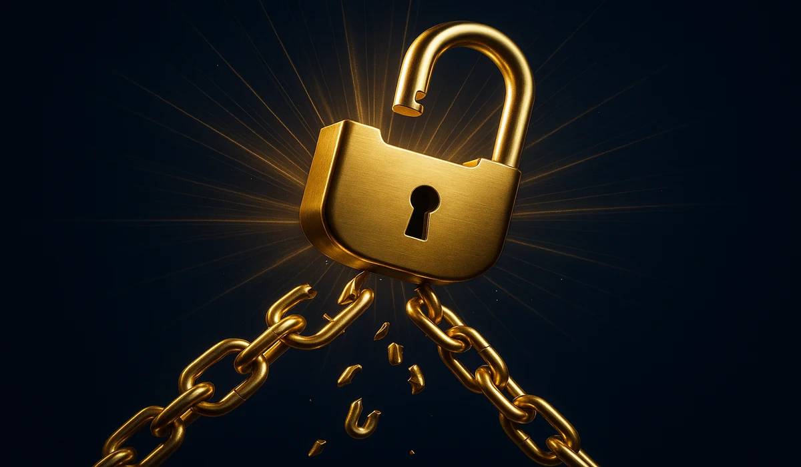
Il sistema ADM blocca l'accesso a tutti i casino con licenza italiana. I casino stranieri non sono collegati a questo database, quindi puoi aprire un account anche se hai un'autoesclusione attiva.
Se hai attivato l'autoesclusione perché il gioco era diventato un problema, usare i casino stranieri per aggirare il blocco non risolve nulla. In questo caso, BetBlocker o Gamban — che bloccano l'accesso direttamente sul tuo dispositivo — sono molto più efficaci e adatti alla situazione.
Se invece sei in autoesclusione per altri motivi — una pausa volontaria o un cambio di abitudini — i casino stranieri sono un'alternativa legale e legittima.
Come escludersi da un casino straniero
Ogni casino serio ha una sezione Responsible Gambling con l'opzione di self exclusion. Puoi scegliere un periodo di sospensione che, nella maggior parte dei casi, non può essere rimosso prima della scadenza. Se non trovi l'opzione, contatta il supporto via live chat: i casino con licenza sono obbligati a processare la richiesta.
Strumenti di blocco alternativi
- BetBlocker: gratuito, blocca oltre 15.000 siti di gioco. Funziona come estensione del browser e come app mobile. Blocco da 24 ore a diversi anni.
- Gamban: a pagamento (~3€/mese), ma molto più difficile da aggirare. Agisce a livello di sistema operativo su tutti i browser contemporaneamente.
- Blocco gambling di Revolut: se usi Revolut, puoi bloccare direttamente dall'app le transazioni verso merchant di gambling.
Giocare in modo responsabile
Il gioco online è intrattenimento. Quando smette di esserlo, è importante riconoscerlo in fretta — perché i problemi di gioco si sviluppano gradualmente e spesso chi è nel mezzo non se ne rende conto subito.
I segnali da non ignorare
- Pensi al prossimo casino anche quando sei al lavoro, a cena, con gli amici
- Stai alzando le puntate per sentire la stessa adrenalina di prima
- Hai provato a smettere o ridurre, ma non ci sei riuscito
- Stai inseguendo le perdite con sessioni sempre più lunghe
- Stai nascondendo quanto giochi o quanto perdi ai tuoi cari
- Il gioco sta influenzando il lavoro, le relazioni o le finanze
Abitudini che fanno la differenza
- Budget fisso prima di iniziare: decidi prima quanto puoi permetterti di perdere nel mese. Trattalo come una spesa di intrattenimento, non come un investimento da recuperare.
- Timer per ogni sessione: imposta un limite di tempo prima di aprire il casino. Quando suona, chiudi. Non trattarlo come un consiglio — trattarlo come una regola.
- Non inseguire mai le perdite: ogni sessione è indipendente dalla precedente. Cercare di recuperare giocando di più è il percorso più diretto verso i problemi.
- Pause ogni 45-60 minuti: le slot online alterano la percezione del tempo. Alzarsi dallo schermo regolarmente aiuta a mantenere lucidità.
Dove chiedere aiuto
- GiocaResponsabile.it: il portale italiano ufficiale. Consulenza gratuita e anonima via telefono e chat, disponibile tutti i giorni.
- GamCare: supporto internazionale con operatori specializzati. Disponibile anche in italiano su richiesta.
- Gamblers Anonymous: comunità peer-to-peer con incontri regolari in tutta Italia.
Domande frequenti
È legale giocare su un casino non AAMS dall'Italia?
Sì, è legale. La normativa italiana regola gli operatori, non i giocatori. Hai il diritto di acquistare servizi digitali da operatori stranieri, specialmente all'interno dello Spazio Economico Europeo. Non stai commettendo nessun reato giocando su un sito con licenza MGA o EMTA dall'Italia.
Come verifico che un casino straniero sia davvero affidabile?
Parti dalla licenza: cerca il numero nel footer e verificalo sul sito ufficiale dell'autorità che l'ha emessa (mga.org.mt per Malta, emta.ee per Estonia). Poi controlla Trustpilot e i principali forum italiani di settore. Un casino con licenza valida e recensioni coerenti raramente delude.
La mia banca blocca i pagamenti: come risolvo?
Apri un account Revolut (gratuito, pronto in pochi minuti), trasferisci i fondi dal tuo conto e usa Revolut per depositare. Funziona praticamente sempre. In alternativa, compra crypto su Coinbase o Binance e deposita direttamente — molti casino lo preferiscono comunque per i prelievi più veloci.
Posso giocare se ho un'autoesclusione ADM attiva?
Tecnicamente sì, perché i casino stranieri non sono collegati al registro ADM. Ma se hai attivato l'autoesclusione per difficoltà concrete con il gioco, ti invitiamo a riflettere seriamente. BetBlocker o Gamban sono strumenti più efficaci se hai bisogno di un blocco vero.
Le vincite nei casino europei sono tassabili in Italia?
Le vincite da casino con sede in un paese UE (Malta o Estonia) non sono soggette a doppia tassazione per il giocatore italiano, grazie al principio europeo di libera circolazione dei servizi. Per casino extra-UE come Curaçao, per vincite importanti è meglio consultare un commercialista.
Qual è il casino migliore per chi inizia?
Richmoose per la semplicità: registrazione via SMS, Apple Pay e Google Pay, wagering tra i più bassi della lista. Se vuoi evitare qualsiasi modulo, NV Casino o Djack con login Telegram sono ancora più immediati e richiedono letteralmente un messaggio per iniziare.
Cosa succede se richiedo un prelievo con il bonus ancora attivo?
In quasi tutti i casino, richiedere un prelievo con un bonus attivo porta alla cancellazione automatica del bonus e delle vincite generate con esso. Completa sempre il wagering prima di prelevare, oppure rinuncia esplicitamente al bonus dall'area personale prima di fare la richiesta.
Come funziona il wagering e come lo calcolo?
Il wagering è il numero di volte che devi scommettere il valore del bonus. Con 100€ di bonus e wagering 30x, devi generare 3.000€ di puntate totali. Ogni puntata riduce il requisito rimanente, visibile in tempo reale nell'area personale. Le slot contribuiscono quasi sempre al 100%; blackjack e roulette spesso al 10% o meno.
Quali casino della lista accettano le criptovalute?
Tutti accettano almeno Bitcoin ed Ethereum. Spinlander ne supporta oltre 20, NV Casino oltre 25. I prelievi in crypto sono generalmente i più veloci: tra 5 e 60 minuti, dipende dal network e dalla congestione della blockchain al momento della transazione.
Fonti e riferimenti ufficiali
- Agenzia delle Dogane e dei Monopoli – FAQ Gioco a distanza
- ADM – Come funziona l'autoesclusione dal gioco a distanza
- GiocaResponsabile – Supporto ufficiale per il gioco problematico in Italia
- Malta Gaming Authority – Registro ufficiale delle licenze MGA
- Curaçao eGaming – Autorità di vigilanza internazionale
- EMTA – Estonian Tax and Customs Board
- BeGambleAware – Risorse internazionali per la prevenzione della ludopatia
- Gazzetta Ufficiale – Testo integrale del Decreto Dignità
- Ministero della Salute – Disturbo da gioco d'azzardo
- Gamblers Anonymous – Programma internazionale di supporto